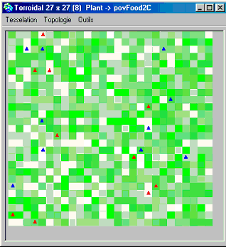
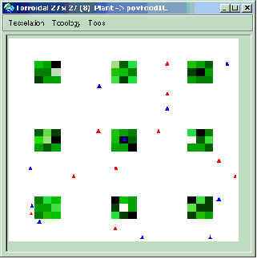
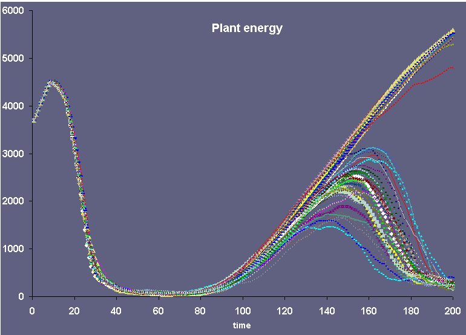
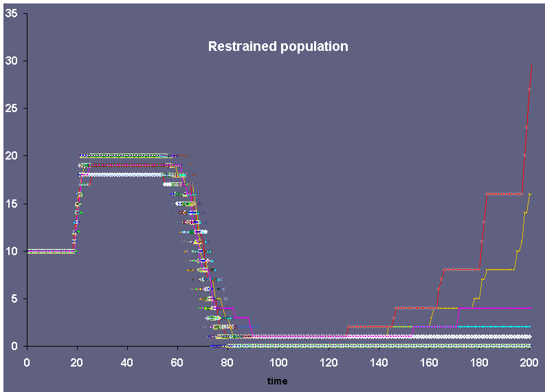
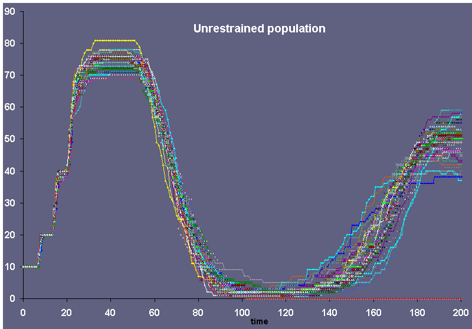
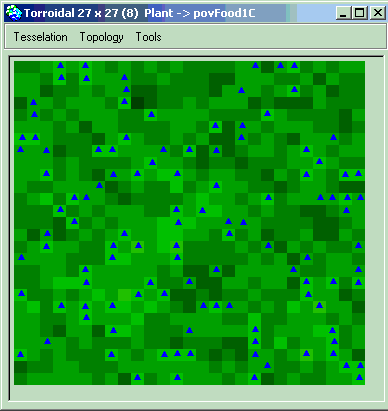
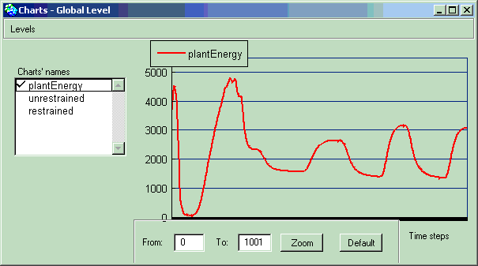
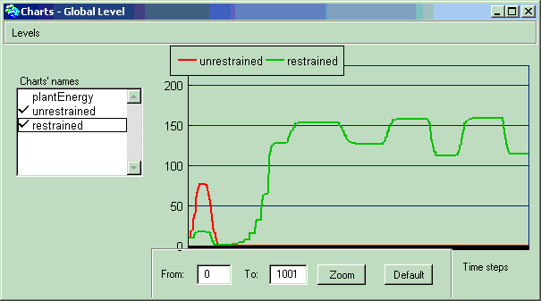

|
ECEC
Environmental Feedback and the Evolution of Cooperation The model, presented here, is a re-implementation of the Pepper and Smuts model :
The model consists of a two dimensional grid, wrapped in both axes to avoid edge effects, containing two kinds of agents: plants and foragers. The main idea is the study of the survival of two populations of agents that depends on the spatial configuration.
Dynamics of the plantsTo control the distribution of plants as an experimental variable, plants are created only at the start of a run, and do not move, die, or reproduce. A plant’s only “behaviors” is to grow and be eaten, while foragers move about seeking and eating plants, reproducing, and dying. Plants have a fixed location in a given grid cell, and vary only in their size, which represents the amount of food energy available to foragers. At the start of a run each plant’s initial size is set to a uniform random number between zero and a fixed maximum. At each time step this energy level increases according to a logistic growth curve. At the start of a run each initial forager is endowed with an energy level chosen as a uniform random number between zero and the fertility threshold, and placed on a randomly chosen cell containing a plant. Dynamics of the foragers At the start of a run each initial forager is endowed with an energy level chosen as a uniform random number between zero and the fertility threshold, and placed on a randomly chosen cell containing a plant. A forager feeds on the plant in its current cell if there is one. It increases its own energy store by the same amount it reduces the plant’s.Foragers are of two types that differes in their feeding behavior. When “restrained” foragers eat, they take only 50% of the plant’s energy. In contrast, “unrestrained” foragers eat 99% of the plant. This parameter is less than 100% so that plants can continue to grow after being fed on, rather than being permanently destroyed. Rules for Foragers’ MovementsForagers examine their current and eight adjacent cells, and from those not occupied by another forager, choose the cell containing the plant with the most energy (with ties broken randomly). If the chosen cell would yield enough food to meet their metabolic cost for one time step they move there. (This fixed metabolic cost per time step is the same for all foragers.) If not, they move instead to a randomly chosen adjacent cell not occupied by another forager. This movement rule leads to the emigration of foragers from depleted patches, and simulates the behavior of individuals exploiting local food sources while they last, but migrating rather than starving in an inadequate food patch. Other Biological Functions of ForagersForagers also loose energy each time step as a fixed metabolic cost, regardless of whether or not they move. If their energy store reachs zero they die, but they do not have maximum life spans. If a forager’s energy level reachs an upper fertility threshold it reproduces asexually, creating an offspring with the same heritable traits as itself (e.g., feeding strategy). At the same time the parent’s energy store is reduced by the offspring’s initial energy. Newborn offspring occupy the cell nearest to their parent that is not already occupied by a forager. |
|
 Global plant energy level fluctuations simulated on 200 time steps (1 curve per simulation) |
|
 Global "restrained" population size fluctuations simulated on 200 time steps (1 curve per simulation) |
|
 Global "unrestrained" population size fluctuations simulated on 200 time steps (1 curve per simulation) |
This analysis shows that "unrestrained" populations of foragers survive with some fluctuations according to the capacity of the environment, while the "retrained" populations colapse. But, in some cases, the "restrained" population may survive. With the Cormas analysis module, it is now possible to record the value of the random seed (Sim22 (seed=3230785234493) = the red curves), and to run a new simulation with this value to observe and analyse this specific simulation. This can be done by adding a line in the "init" method of the model :
homogeneousEnv Cormas randomSeed: 3230785234493.
self spaceModel loadEnvironmentFromFile: random.env withPov: #povFood2C.
super initCells.
self initForagers.
|
 Global plant energy level fluctuations simulated on 1000 time steps with the seed value set to 3230785234493 |
 Global plant energy level fluctuations simulated on 1000 time steps with the seed value set to 3230785234493 |
 Global "restrained" and "unrestrained" populations sizes fluctuations simulated on 1000 time steps with the seed value set to 3230785234493 |